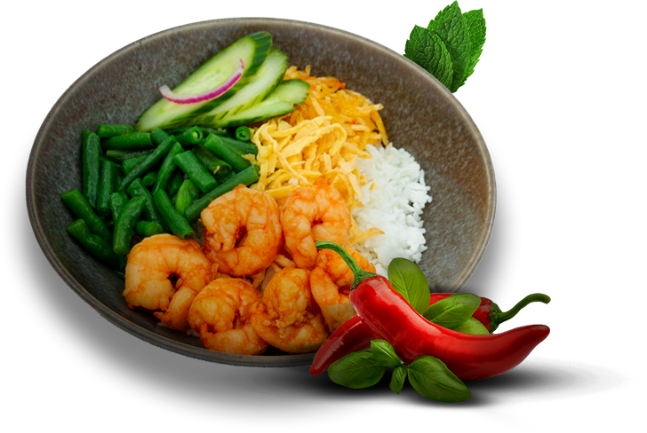
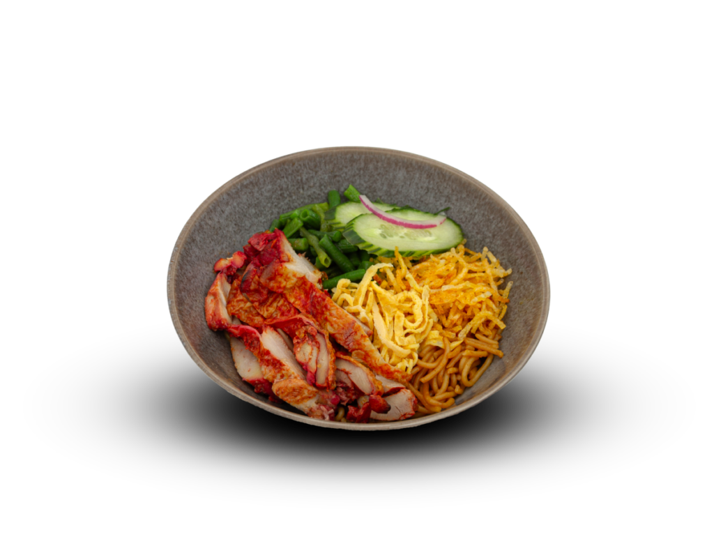
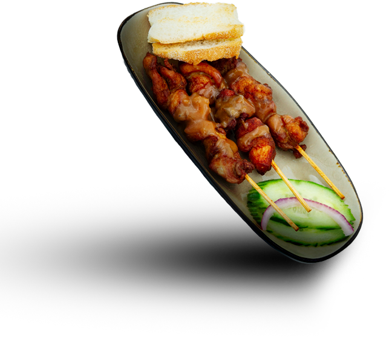

Surifoods
Traditionele Surinaamse en Javaanse gerechten in Apeldoorn
Bami, nasi, roti, broodjes en bara van een familiebedrijf, met recepten van oma's, moeders en tantes.


Love sharing, love Surifoods
Wie zijn wij
Surifoods is een hartverwarmend familiebedrijf met passie voor traditionele Surinaamse en Javaanse recepten.
In een wereld waar die kostbare liefde voor eten dreigt te vervagen, maken wij het verschil met recepten die al decennia lang worden doorgegeven, van oma's op moeders en tantes.
Love sharing
Bij Surifoods draait het om 'Love Sharing'. Wij geloven dat eten mensen samenbrengt, en dat samenzijn gelijk staat aan liefde. Die liefde voor eten vind je terug in onze keuken en ons restaurant: een plek waar smaken en verhalen samenkomen en gedeeld worden.


Wij bezorgen
Kom samen en deel de smaken van Surifoods met je familie, vrienden of collega's.
Bestel online, betaal met iDEAL en kies of je het laat bezorgen of zelf ophaalt. Bezorgen kan vanaf een bestelling van € 15,-; de bezorgkosten beginnen bij € 2,50.
Bestel online- Vrijdag
- vanaf 11.00 uur
- Dinsdag t/m donderdag
- vanaf 16.30 uur
- Zaterdag
- vanaf 16.30 uur
- Zondag en maandag
- geen bezorging

Catering vanaf 15 personen
Eten verbindt en brengt vreugde en liefde. Daarom verzorgen we ook catering voor gezelschappen vanaf 15 personen. Of het nu gaat om een intiem feestje of een evenement: we gaan samen met je om tafel, zodat we aan jouw wensen kunnen voldoen.
Ook collega's brengen we samen, met lunch, diner of BBQ, zodat iedere zakelijke bijeenkomst een smakelijk succes wordt.
Kom bij ons werken
- Kassamedewerker
- Keukenmedewerker
- Bezorger
Interesse in een van deze vacatures? Neem contact met ons op via info@surifoods.nu, bel 055 843 8983 of kom gezellig langs.
Openingstijden en contact
Winkel
Stationsstraat 153
7311 ME Apeldoorn
| Maandag | gesloten |
|---|---|
| Dinsdag t/m zaterdag | 11.00 – 21.00 |
| Zondag | gesloten |
Winkelcentrum 't Fort
| Maandag t/m donderdag | gesloten |
|---|---|
| Vrijdag en zaterdag | tot 19.00 |
| Zondag | gesloten |